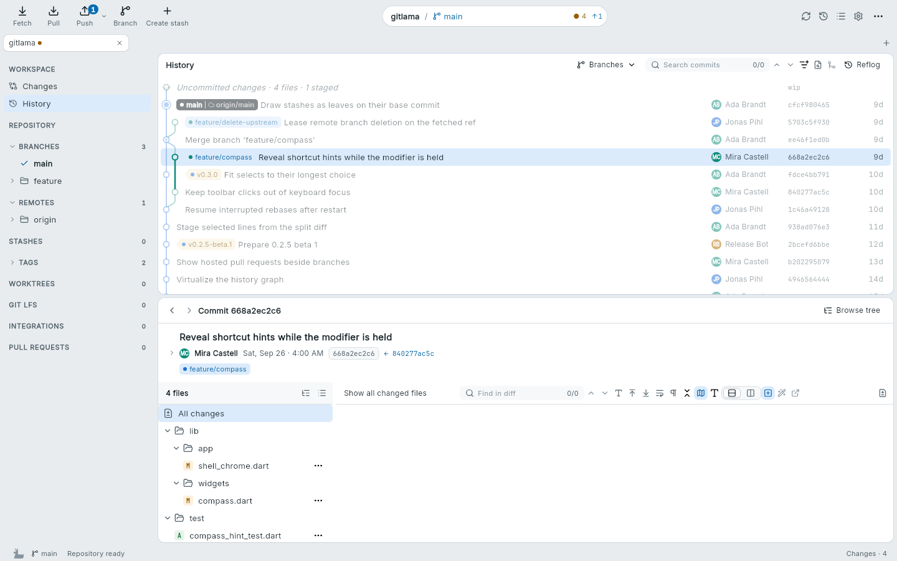

Changes
Stage files, hunks or single lines. View diffs unified or split, including images and other encodings. Commit with amend, sign-off, templates and co-authors.
Git client for macOS, Linux and Windows
GitLama is a desktop Git client. It keeps the history graph, your changes and the selected diff in one window.
Beta. Free software under GPL-3.0-or-later. Built with Flutter and Rust.

The sidebar on the left, the history graph at the top, the selected commit below. Rendered from the app with sample data.
Features
The everyday Git tasks, and some that usually mean a trip to the terminal.
Stage files, hunks or single lines. View diffs unified or split, including images and other encodings. Commit with amend, sign-off, templates and co-authors.
A history graph with file trees, blame and reflog. Compare two commits, search commit content and step through a bisect.
Create, rename, merge, cherry-pick and revert. Interactive rebase, autosquash and restacking show a preview before they run.
Fetch, pull and push, with force-with-lease as an explicit choice. Connect GitHub, GitLab, Forgejo or Codeberg for pull requests and review drafts.
Manage worktrees, submodules and Git LFS. Open your editor, terminal, diff or merge tool, and add your own commands.
Resume conflicts and rebases after a restart. Named snapshots and per-repository undo let you step back. When an outcome is unclear, the app says so.
The graph
The branch you are on runs in the first lane. Other branches leave and rejoin it on curves, so a merge is easy to follow.
A model, not the app. Select a commit to light its ancestors.
Changes
Pick single lines from a diff and leave the rest unstaged. The same works for hunks and whole files.
void _onModifier(bool held) { setState(() => _hints = held); if (held == _hints) return; setState(() => _hints = held); } bool get showsHints => _hints;}
Nothing left to stage. Edit the file again and the new changes appear here.
A model, not the app. Click a line number to select changed lines, then stage them.
Download
GitLama is in beta. It uses the Git you have installed, version 2.39 or newer. Open a repository and you are ready.
Each package lists its SHA-256 checksum. Copy it with the button next to the package and compare it with your file.
shasum -a 256 GitLama-*.dmg # macOS sha256sum gitlama_*.deb # Linux Get-FileHash GitLama-*.msi # Windows PowerShell
The links on this page come from a release index signed with Ed25519. Public key